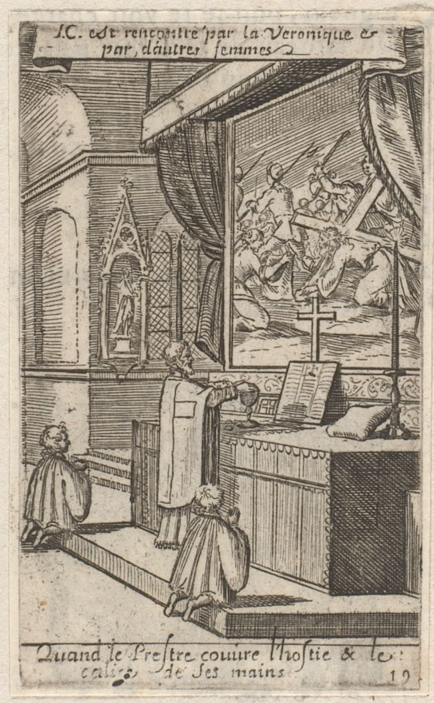

Hands over the oblations — source witness
Original public-domain historical artwork, not a released Mass icon. This page separates what is visibly present in a 1661 engraving from what the 1962 Roman Missal requires at the actual Hanc igitur prayer.

Sébastien Leclerc I, Quand le Prestre couvre l'hostie & le calice de ses mains, 1661, plate 19. Rijksmuseum object RP-P-OB-69.169. The scan is permanently preserved on the research branch, with verified SHA-1, SHA-256, pixels and CC0 license evidence.

What the source proves
- Yes: period Roman Catholic celebrant seen at a traditional altar, in vestments, holding arms over or close to offerings, accompanied by two servers.
- Yes: engraved French caption explicitly associates the gesture with the Host and chalice.
- No: the precise orientation and separation of two open palms is not legible enough to certify 1962 action geometry.
- No: the engraving is dated 1661; it is not itself a photograph or normative source for the exact 1962 form.
The 1962 standard
C0161 — Hanc igitur. Both hands are to be extended above the oblations with palms facing the Host and chalice until Per Christum Dominum nostrum, followed by joining the hands. Source: Ritus servandus VIII.4.
C0117 — Veni sanctificator. After In spiritu humilitatis the priest stands erect, raises eyes and both hands, and immediately rejoins his hands. This is NOT the preceding mixing of water/wine (Deus, qui humanae). Source: Ritus servandus VII.5.
C0263 — Final blessing. The eyes-and-hands elevation is a separate liturgical context and needs its own exact cue review. Source: Ritus servandus XII.1.
Approved visual-family comparators (NOT replacement art)

priest_centre_arms_rich

priest_centre_hands_rich
priest_rail_after_rich
At 32px and 48px, any future C0161 replacement must show two unmistakable open palms positioned above the separate Host and chalice, and remain legible beside these approved masters. A source drawing that merely implies the action is insufficient. A new reference for C0117/C0263 is still required before creating either visual.